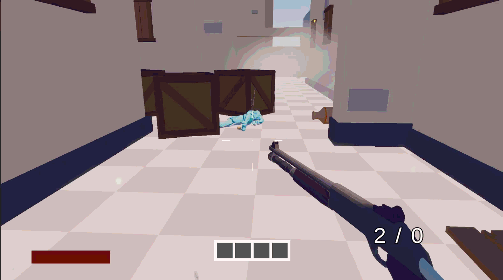
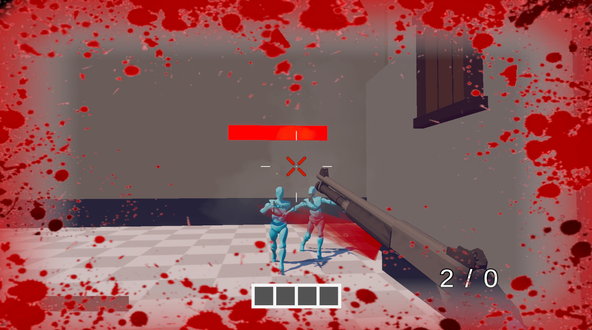
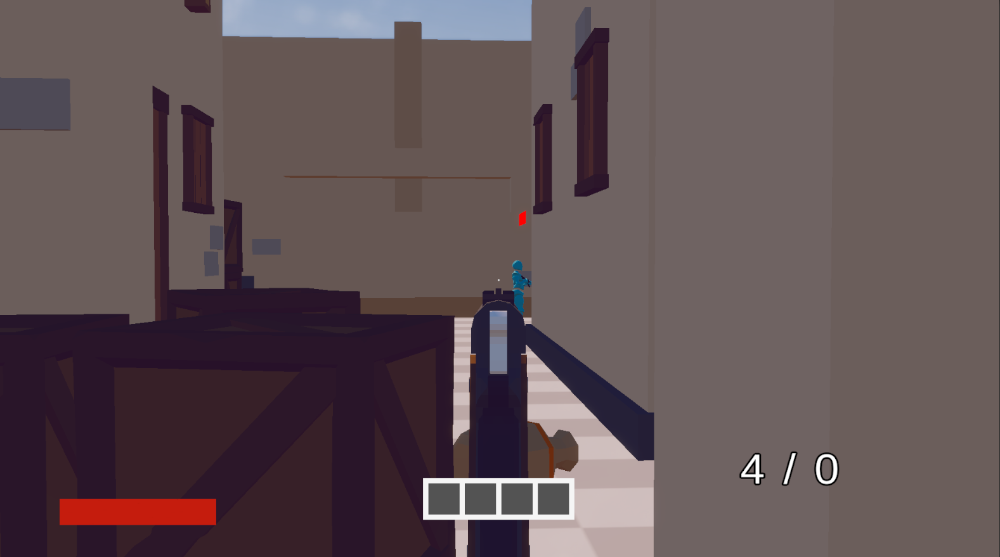
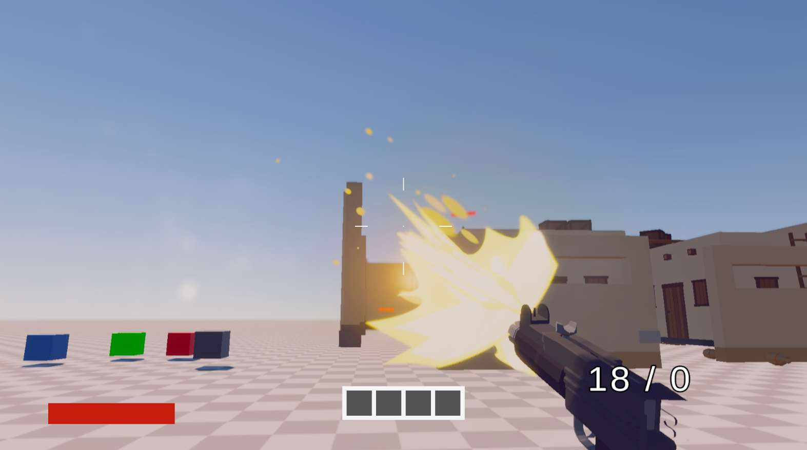
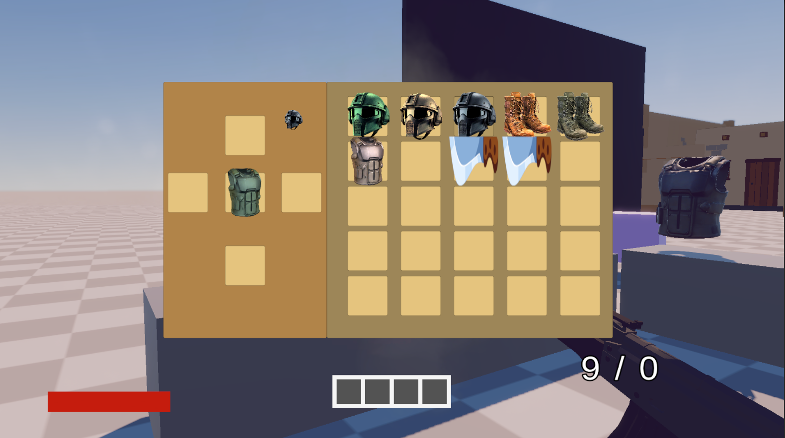
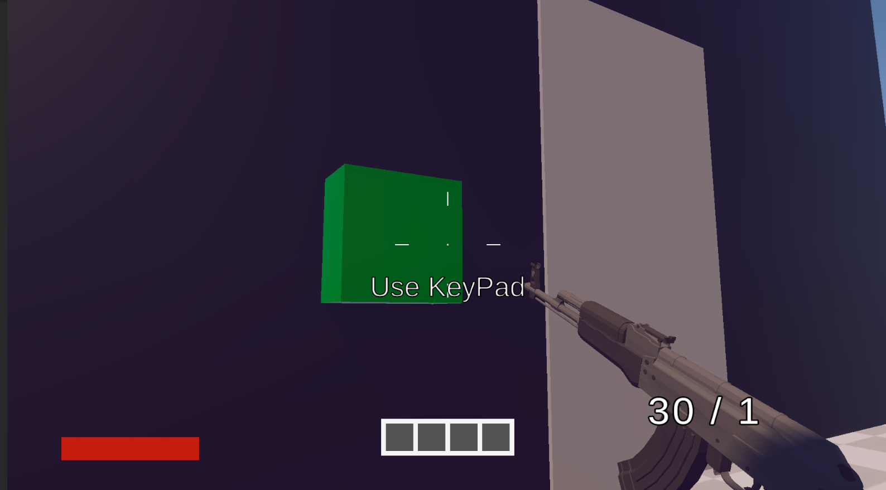
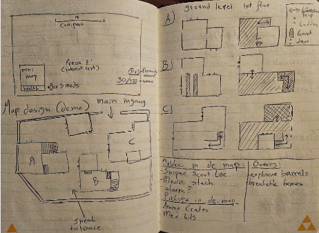
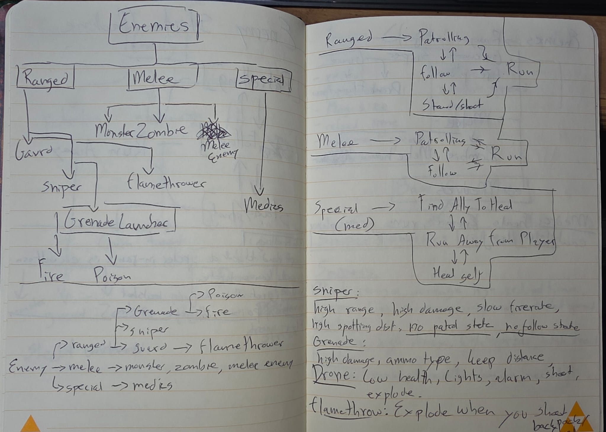

FPS Shooter
About
This FPS is a passion project I started in my free time.
I followed multiple tutorials about interaction, inventory and weapon systems.
Project Info
Engine:
Unity
 Development
time: 3 weeks
Development
time: 3 weeks
Team size: 1
developer
Introduction
During this passion project I tried taking on a bigger scope and although the gameplay is not fully fleshed out I leaned a lot of new things about the workflows in Unity.
Not having a deadline also gave me some space to try out some new ideas and make mistakes to learn from.
Gameplay
The gameplay for this project is based on first person shooters like far cry.
Switch instantly between weapons, use throwables, interact with the surrounding and find ammunition boxes to refill your weapons.
Run away from enemies or hide to be lost and be careful to avoid being spotted or heard.

Systems I worked on.
- Player Movement System – Character controller based movement using the new Input system.
- Player Interaction System – Interact with objects.
- Player Combat System – Raycast based weapons and physics based grenades.
- Weapon Recoil and Sway Systems – Moves weapons while moving.
- Weapon Switching System – Change current weapon.
- Enemy Behaviour – State driven behaviour.
- Ragdoll Physics – Activate ragdoll on enemy death.
- Health Systems – Update health stats and healthbars.
- Settings Menu –
Change settings during gameplay. - Inventory System – Pickup items and move between inventory and equipment screens.
- Props Physics – Shooting props gives them velocity.
What I've learned.
This project is something I decided to make when my vacation started, I wondered how hard it would be to make a game with a bigger scope and more complex movement and weapon mechanics.
I began by making some design decision, thinking a lot about the different weapon types, enemy state machines, map desing and weapon balancing.
At this point I wasnt familiar with design and technical design documents but I decided to draw out my ideas of how the inheritence should work and made a basic map design.
After following a couple tutorial I learned a lot while making the interaction system and inventory system.
I also learned how to make my scripts more compact, systems more dynamic to use for other projects and how to use Unity's new input system.
At this point I started adding systems on my own like diffrent weapons and throwables.
Making the aim mechanic for the sniper was hard at first but I used post processing effects to overlay the screen with a scope and simulate camera distortion.
Event system, object layers and more complex state machines taught me a lot about programming and workflows in Unity.
When I started working on the enemies I started working with animation controllers and ragdoll physics which helped me get a better understanding of how animation rigs work and using inverse kinematics to aim at a target.
After the movement and combat was working I started learning about Unity's ScriptableObjects which opened my mind up for a lot of possibilities.
Instantly I started converting all weapon data, player movement stats, settings and enemy data into ScriptableObjects.
This was really fun but at some point I notices the downsides to this system.
At some point I decided not continue to work on this project because I had learned other things that would make the production way faster, more readable and more dynamic.
Still I was really happy with the result and proud to show it off to people.








< Return